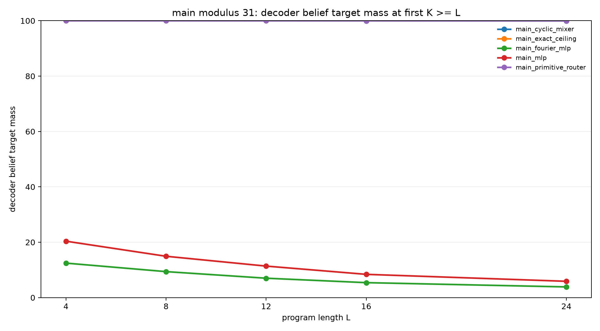
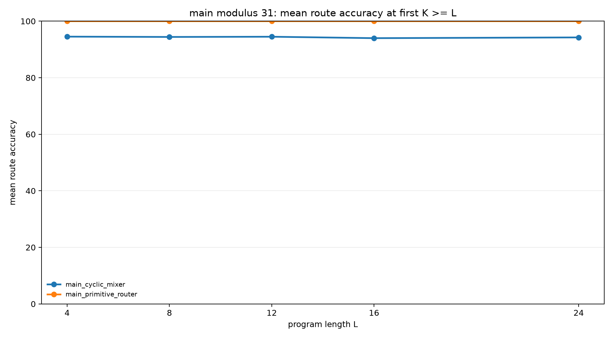
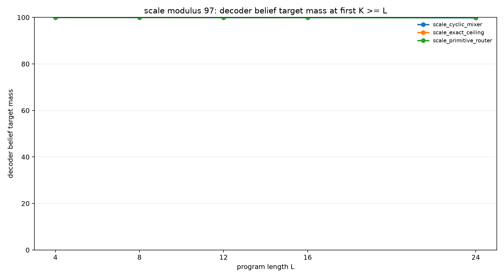

Cyclic Transition Structure Solves Modular Slot Execution
Abstract
This experiment tests whether modular arithmetic structure is sufficient
for a recurrent slot model to learn exact latent belief-state transitions.
Each task starts with a hidden relation B = A + d (mod p),
then applies arithmetic updates and observation filters to hidden registers
A and B. The model is given the initial support in
oracle slots, so the experiment isolates the transition learner.
At modulus 31, a generic MLP transition reaches only 22.6% query mass and 5.9% strict belief mass at held-out length 24. A Fourier-feature MLP is weaker, reaching 18.4% query mass and 3.9% belief mass. A cyclic candidate mixer reaches 100.0% query mass and 100.0% belief mass through length 24. A learned primitive router also reaches 100.0%. A modulus-97 scale check keeps the structured variants essentially exact: 99.8% belief mass for the cyclic mixer and 99.9% for the primitive router at length 24.
Task
Each example begins with:
B = A + d (mod p), with A unknownThe initial belief contains p possible (A,B)
states. Programs contain arithmetic updates and observation filters:
A=A+c, A=A-c, B=B+c,
B=B-c, A=A+B, B=B+A,
A=A-B, B=B-A, A % m = r, and
B % m = r. Observation residues are sampled from the live
support, so target beliefs are never empty.
Model
The recurrent state is a fixed set of weighted slots. Each slot contains
logits over A, logits over B, and one slot-weight
logit. The decoded belief is:
P(A,B) = sum_s softmax(w)_s * P_s(A) * P_s(B)All reported runs use oracle initialization: slot a starts at
(A=a, B=a+d). This makes the transition rule the only learned
component.
Transition Ladder
| Mode | Description |
|---|---|
| Exact ceiling | Applies the known transition rule directly. |
| MLP | Uses expected slot embeddings, operation embeddings, and argument embeddings to predict new slot logits. |
| Fourier MLP | Replaces value embeddings with cyclic Fourier residue features before the MLP. |
| Cyclic mixer | Learns gates over equivariant candidate updates such as circular shifts, circular sums/differences, and observation conditioning. |
| Primitive router | Learns a soft route over exact equivariant transition primitives. |
Protocol
| Phase | Modulus | Training lengths | Evaluation lengths | Examples per length |
|---|---|---|---|---|
| Smoke | 7 | 1-3 | 2, 3 | 128 |
| Pilot | 11 | 1-6 | 3, 6, 9, 12 | 512 |
| Main | 31 | 1-8 | 4, 8, 12, 16, 24 | 512 |
| Scale | 97 | 1-8 | 4, 8, 12, 16, 24 | 128 |
Main Results
| Variant | Transition | L=4 query | L=8 query | L=12 query | L=16 query | L=24 query | L=24 belief | L=24 route acc |
|---|---|---|---|---|---|---|---|---|
| Exact ceiling | exact | 100.0% | 100.0% | 100.0% | 100.0% | 100.0% | 100.0% | n/a |
| MLP | MLP | 66.4% | 50.3% | 39.1% | 31.4% | 22.6% | 5.9% | n/a |
| Fourier MLP | Fourier MLP | 60.2% | 43.9% | 33.1% | 26.1% | 18.4% | 3.9% | n/a |
| Cyclic mixer | cyclic mixer | 100.0% | 100.0% | 100.0% | 100.0% | 100.0% | 100.0% | 94.3% |
| Primitive router | primitive router | 100.0% | 100.0% | 100.0% | 100.0% | 100.0% | 100.0% | 100.0% |


Modulus-97 Scale Check
| Variant | Transition | L=4 query | L=8 query | L=12 query | L=16 query | L=24 query | L=24 belief | L=24 route acc |
|---|---|---|---|---|---|---|---|---|
| Exact ceiling | exact | 100.0% | 100.0% | 100.0% | 100.0% | 100.0% | 100.0% | n/a |
| Cyclic mixer | cyclic mixer | 100.0% | 100.0% | 100.0% | 99.9% | 99.9% | 99.8% | 100.0% |
| Primitive router | primitive router | 100.0% | 100.0% | 100.0% | 100.0% | 99.9% | 99.9% | 100.0% |

Interpretation
The transition learner needs cyclic modular structure, not merely more dense parameters or residue features.
The oracle slot state already contains the correct initial support. The hard part is applying the same update rule repeatedly. A generic MLP can learn some task-level query signal, but its decoded belief remains far from exact at modulus 31. Fourier features expose cyclic coordinates, but do not enforce cyclic transition algebra. The cyclic mixer changes the learning problem: it offers the correct equivariant update families and trains a small controller to compose them.
Limitations
The experiment uses oracle slot initialization. It does not test whether a model can populate the slot memory from raw text or from a learned encoder. The cyclic mixer contains hand-designed equivariant candidate updates. The result should be read as evidence for the required transition structure, not as evidence that a generic neural model will discover that structure unaided.
Reproducibility
Run outputs are in experiments/cyclic_transition_ladder/runs/.
Checkpoints are stored externally in
large_artifacts/cyclic_transition_ladder/checkpoints/.
PYTHONDONTWRITEBYTECODE=1 python experiments/cyclic_transition_ladder/src/analyze_cyclic_transition_ladder.py